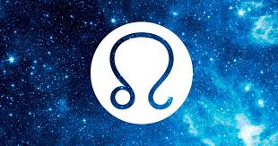

Classement : cinquième signe astrologique
Dates : correspond aux personnes qui sont nés du 23 juillet au 22 août
Elément : le feu
Couleur : le jaune
Pierre précieuse : l'ambre
Astre dominant : le Soleil
Qualités : généreux, chaleureux, déterminé, loyal et optimiste
Défauts : autoritaire, orgueilleux, manipulateur, égocentrique et vaniteux
Signe complémentaire et opposé : le Verseau 